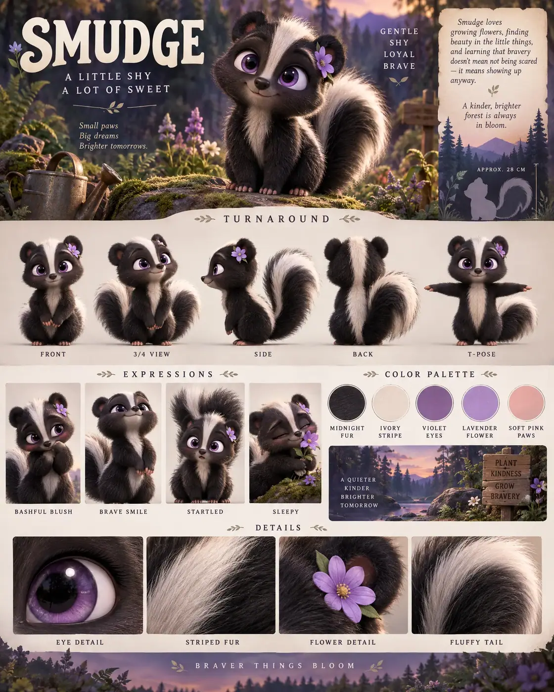

#10 of 100
Smudge
Striped skunk
Forest & MeadowA LITTLE SHYA LOT OF SWEET
- Species
- Striped skunk
- Collection
- Forest & Meadow
- Height
- 28 CM
- Personality
- GENTLESHYLOYALBRAVE
- Colour palette
- MIDNIGHT FURIVORY STRIPEVIOLET EYESLAVENDER FLOWERSOFT PINK PAWS
- Expressions
- bashful blush
- brave raised-chin smile
- startled puffed-tail look
- sleepy flower-nuzzling face
- Detail panels
- EYE DETAIL
- STRIPED FUR
- FLOWER DETAIL
- FLUFFY TAIL
- Character note
- Smudge growing flowers and learning to be brave
Reference sheet prompt
Cute striped skunk named SMUDGE, with oversized violet eyes, soft black fur, a broad white stripe from forehead to tail, rounded ears, a fluffy tail, and a tiny lavender flower tucked behind one ear. A shy woodland gardener with surprising confidence high-end 3D animated feature character reference sheet, original character design, portrait 4:5 presentation board, polished family-animation aesthetic, top-left header reading “SMUDGE” with the tagline “A LITTLE SHY / A LOT OF SWEET,” top-right traits reading “GENTLE / SHY / LOYAL / BRAVE” full-body turnaround — exactly five views: front / 3-4 / side / back / T-pose, white stripe, flower, paws, and tail markings identical in every view, clean labels beneath each pose row of 4 expressions: bashful blush, brave raised-chin smile, startled puffed-tail look, sleepy flower-nuzzling face color palette swatches labeled MIDNIGHT FUR, IVORY STRIPE, VIOLET EYES, LAVENDER FLOWER, SOFT PINK PAWS woodland meadow habitat accents with ferns, wildflowers, moss, and dusk-toned forest shapes in the information panels, approximate height “APPROX. 28 CM,” bio about Smudge growing flowers and learning to be brave bottom macro panels labeled EYE DETAIL, STRIPED FUR, FLOWER DETAIL, FLUFFY TAIL 8k render, soft layered fur, clean professional layout, no extra skunks, no logos